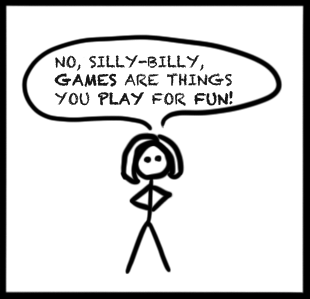

What is a Game?
A Simple Introduction.
Making games is pretty frickin' awesome, but before we can do that, we have to figure out just what exactly games are. Off to the dictionary!
Definition
1 a (1) : activity engaged in for diversion or amusement
Merriam-Webster Online Dictionary
 Hmmm, Tom thinks to himself. So watching TV is a game? I mean, it is a diversion, right?
Hmmm, Tom thinks to himself. So watching TV is a game? I mean, it is a diversion, right?
I think young Sally might have something to say about that!


Sally is absolutely right. Games come in many different forms, but all of them involve interaction, in the form of play. Let's look at a clearer definition before we move on:
Noun: A form of play or sport, esp. a competitive one played according to rules and decided by skill, strength, or luck.
Google Search: "define: game"
Now that's something that even Sally can agree with.
What's a Computer Game?
When you think of the phrase Computer Game, the first thing that comes to mind is probably a graphically rich PC game like Call of Duty, but you would only be scratching the surface. A computer game is a game played on an electronic device, and it doesn't need to involve a screen at all! (See, for example Wikipedia: Audio Game) In most cases, though, people talking about computer games are actually talking about Video Games, which do require graphical output.
Computer Game Genres
Games are released for many platforms, and new ones are released every year, so it doesn't make much sense to create a definitive list. Even so, when you develop games, you should always be aware of the benefits and limitations of the platform(s) you want you want the game to run on and what players expect from them. For example, iPhone games can't rely on keyboard input, and PC gamers expect to be able to customize their gaming experience more than console gamers.
Games themselves can be classified in a variety of different ways, including rating and input device. However, the most common classification system is probably game genre, which includes categories like Action-Adventure and Real Time Strategy. Games frequently fall into a variety of genres, and the genres are not always clear: the indie game Trine, for example, is both a Platformer as well as a Puzzle game according to Wikipedia, but is presented as an action game on Frozenbyte's website.
Game classification is pretty subjective, and I'll let you make your own decisions on the matter:
Like game platforms, new game genres are developed all the time. For example, League of Legends defined the MOBA genre.
What Makes Games Good?
It's not very difficult to tell a bad game from a good one, and sometimes figuring out why a game is bad is really easy. However, it is much more challenging to tell what makes games good; games are, first and foremost, a form of entertainment or art, and we all have different tastes in games—just like we have different tastes in music, movies, and books.
Academics like Marc Prensky have tried to determine what makes games as a whole engaging, but that isn't enough to tell us why a specific game is good. For that, we can turn to game journalists, designers, and UX experts.
For example, in the following design tour, David Rosen from Wolfire Games critiques a 2D action/puzzle game called Aquaria:
If you prefer written explanations, Charles L. Mauro's cognitive teardown of Angry Birds makes for an excellent read.